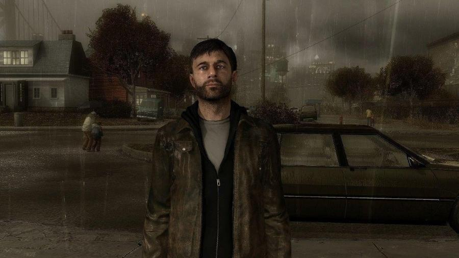
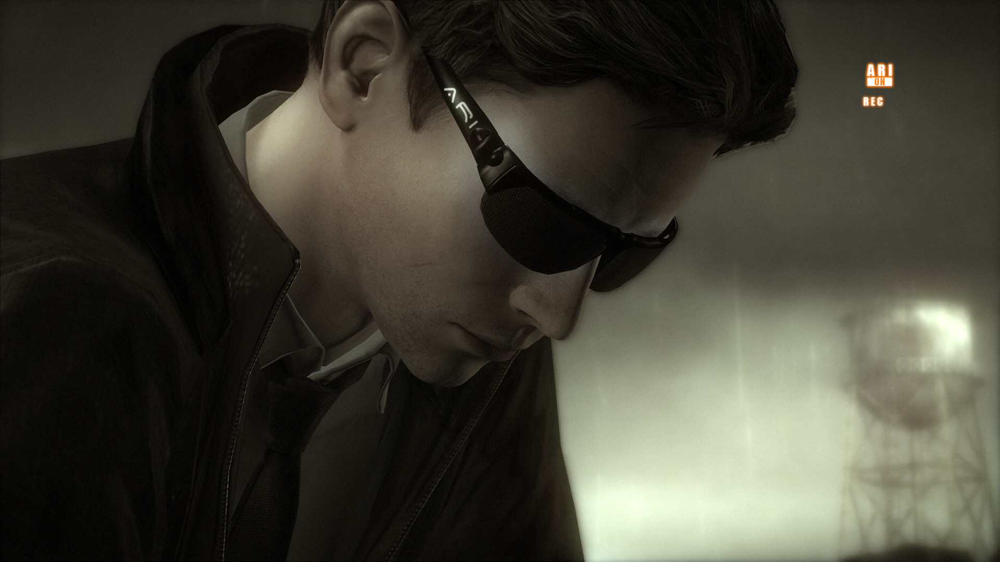
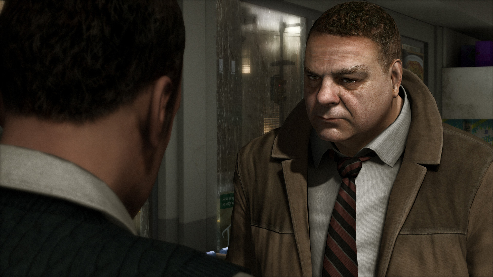

Heavy Rain
Sistema operacional: Windows 7 ou superior
Processador: Intel Core i5-4430 @ 3.0 GHz or AMD FX-6300 @ 3.5 GHz.
RAM 4GB
Placa de vídeo: Nvidia GeForce GTX 660 with 2GB VRAM or AMD Radeon HD 7870 with 2GB VRAM
Espaço em disco rígido: 35 GB.
Historia
A história de Heavy Rain é um thriller dramático estilo film noir, centrado em quatro protagonistas envolvidos com o mistério do Assassino do Origami, um serial killer que usa longos períodos de chuva para afogar suas vítimas. O jogador interage realizando ações destacadas na tela relacionadas aos movimentos no controle, em alguns casos, pressionando uma sequência rápida de botões durante os momentos de ação mais acelerada. As decisões do jogador durante o jogo afetam a narrativa, os personagens principais podem ser mortos e certas ações podem levar a cenas e finais diferentes.
Em Heavy Rain, um assassino em série tem causado pânico em uma cidade. Em dias chuvosos de outono, ele sequestra suas vítimas e poucos dias depois seus corpos aparecem com uma flor e um origami. Por conta disso ele passou a ser chamado pela polícia e pela mídia de Origami Killer. O jogador então alterna entre quatro pessoas que estão ligadas ao caso, cada uma com seu próprio interesse e questões pessoais. Esse recurso faz com que o caso seja mais dinâmico, acrescentando outras perspectivas para o jogador. E isso acontece de forma natural, como cortes entre sequências de um filme.
Além do mistério e sua revelação ao longo do jogo, uma questão fundamental da narrativa é o apelo emocional. Enquanto jogava, me senti verdadeiramente tenso pelas situações apresentadas e desejando no mínimo resgatar a última vítima do Origami Killer, mesmo que não tivesse o melhor final possível. Em especial, essa sensação se deve à boa apresentação do drama familiar de um dos personagens, cujo desenvolvimento, apesar de breve, adicionou um peso muito pessoal ao problema e me causou forte empatia. Outro aspecto importante para causar essa tensão é a importância das decisões do jogador. Além de alterar o desenvolvimento do enredo nas cenas, algumas escolhas podem causar impactos drásticos no final obtido. Somos jogados diante de situações moralmente ambíguas ou momentos complicados onde descuidos podem ser fatais. Agir e reagir a elas adequadamente nem sempre é uma tarefa fácil e é interessante ver as repercussões que elas têm na trama.
Jogabilidade
A maior parte do game é em Quick Time Event. Heavy Rain é semelhante a muitos jogos de ficção interativa, exigindo que jogador mova o personagem para interagir com os objetos ou outros personagens não jogáveis para o progresso da história. As escolhas que o jogador faz ou as ações realizadas ou não realizadas afetará mais tarde cenas no jogo. Por exemplo, é possível que um personagem morra ou seja preso, e não esteja presente em uma cena mais tarde. Não há "game over" em Heavy Rain. O jogo irá progredir para uma série de finais diferentes, dependendo do desempenho do jogador, mesmo se todos os personagens se tornarem incapacitados de alguma maneira. No entanto, quando o jogo estiver completo, o jogador pode retornar a cenas anteriores e reproduzi-las, possivelmente alterando os fatos.
Na maioria das cenas, o jogador pode controlar o personagem principal, movendo-o pelo ambiente e pode pressionar um botão para ouvir os pensamentos do personagem. Quando o jogador está perto de um objeto ou outro personagem que possa interagir, eles serão apresentados com um ícone sensível que representa o controle que eles precisam fazer. Em algumas cenas, o jogador não tem controle total sobre o personagem, mas deve estar preparado para responder os comandos em tempo rápido, como uma luta corpo-a-corpo ou quando estiver dirigindo freneticamente no lado errado da estrada, se o jogador cumprir os comandos de forma incorreta eventualmente alterará a forma as futuras cenas.